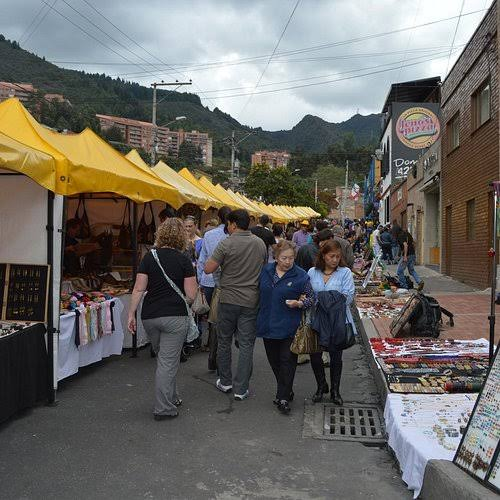
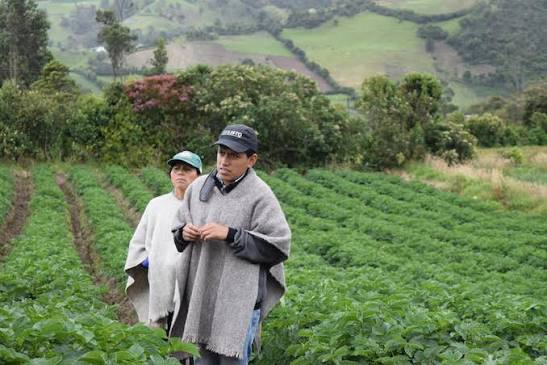
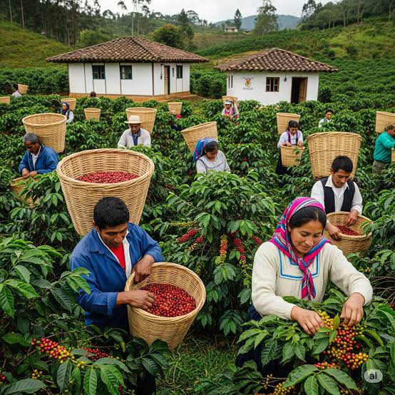
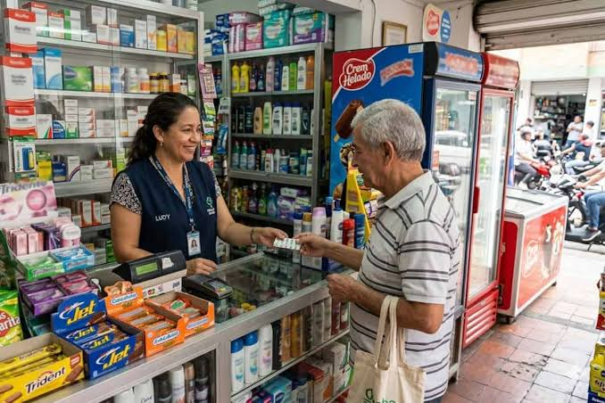
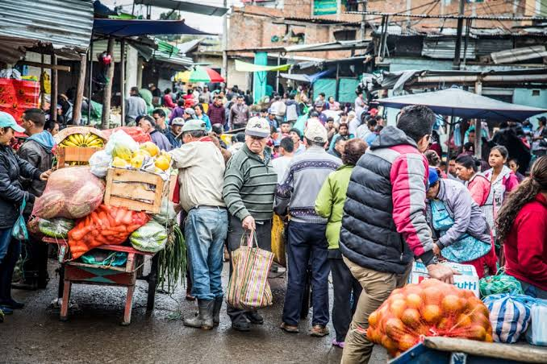

Panorama económico
La economía colombiana combina servicios, industria, comercio y actividades rurales y extractivas. Su desempeño se observa, entre otros indicadores, a través del producto interno bruto (PIB), que mide el valor agregado de la producción. El crecimiento convive con retos de productividad, empleo de calidad y diferencias entre regiones.
Crecimiento del PIB durante el primer semestre de 2026, según el Banco Mundial.
Fuente: Banco Mundial, actualización del 30 de septiembre de 2026Mercados y actividad productiva
El comercio conecta productores, empresas y consumidores, tanto en las ciudades como en los municipios. Los servicios —como transporte, finanzas, comunicaciones y turismo— tienen un papel importante en la actividad económica. Los mercados locales también son espacios clave para el trabajo independiente y la distribución de alimentos.

El DANE mide la actividad económica mediante las cuentas nacionales y el PIB. Consultar información del PIB en el DANE.
El campo y la producción agropecuaria
La agricultura y la ganadería sostienen empleos rurales y abastecen los mercados del país. La diversidad de climas permite cultivar productos como frutas, tubérculos, cereales y hortalizas. La producción enfrenta desafíos como el acceso a vías, tecnología, financiación y la variabilidad del clima.

El DANE publica estadísticas de producción, precios, área y rendimiento agropecuario. Consultar estadísticas agropecuarias.
El café: producción y cultura
El café es uno de los productos colombianos más reconocidos y una fuente de ingresos para numerosas familias productoras. Su cadena incluye el cultivo, la recolección, el beneficio, la comercialización y la exportación. La calidad y el origen son parte de su valor en los mercados nacionales e internacionales.

La Federación Nacional de Cafeteros reúne estadísticas de la actividad cafetera. Consultar estadísticas cafeteras.
Petróleo y minería
El petróleo, el gas y los minerales aportan producción, exportaciones e ingresos públicos, y generan encadenamientos con transporte, servicios e industria. Al mismo tiempo, son actividades que plantean retos ambientales y sociales. La transición energética abre el debate sobre cómo diversificar la economía y las fuentes de ingreso del país.
El PIB permite seguir el aporte de las actividades económicas. DANE: cuentas nacionales.
Empleo e informalidad
El trabajo informal sigue siendo una realidad para muchas personas: puede implicar ingresos inestables y menor acceso a protección social. En el trimestre junio-agosto de 2026, el DANE registró informalidad de 83,1 % en centros poblados y rural disperso, frente a 42,0 % en las 23 principales ciudades y áreas metropolitanas.

Fuente: DANE, Empleo informal y seguridad social, junio-agosto de 2026. Consultar los resultados.
Crecimiento económico
El crecimiento refleja el aumento de la producción de bienes y servicios, pero no describe por sí solo cómo se distribuyen sus beneficios. El Banco Mundial reportó que la economía creció 2,6 % en 2025 y 2,9 % en el primer semestre de 2026. La inversión, la productividad y la estabilidad macroeconómica son importantes para sostener el crecimiento.
Fuente: Banco Mundial — Colombia.
Desigualdad y diferencias sociales
Las oportunidades y los ingresos no se distribuyen de la misma manera entre hogares y territorios. Las diferencias en acceso a educación, empleo formal, infraestructura y servicios pueden ampliar las brechas entre zonas urbanas y rurales, así como entre grupos sociales. Reducirlas requiere crecimiento inclusivo, mejores oportunidades laborales y servicios que lleguen a más comunidades.

El DANE publica indicadores de pobreza monetaria y condiciones de vida. Consultar estadísticas de pobreza. El Banco Mundial también analiza las brechas territoriales y sociales.